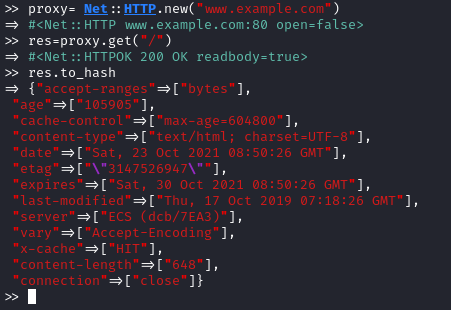
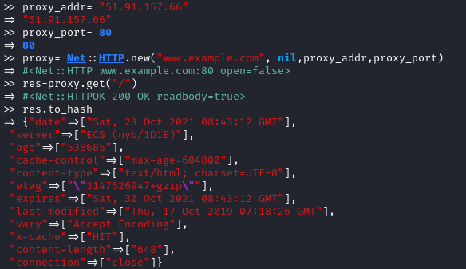

Proxies
Create a Net::HTTP object with the right proxy parameters:
• address
• port
• user/password (if required).
Free proxies list:
https://www.freeproxylists.net/proxy_addr= "51.91.157.66"
proxy_port= 80
proxy= Net::HTTP.new("www.example.com", nil,proxy_addr,proxy_port,:use_ssl=>true) #for HTTPS
proxy= Net::HTTP.new("www.example.com", nil,proxy_addr,proxy_port) #for HTTP
#perform a request
res=proxy.get("/")
we can see that is working because we are interacting with the proxy server
Test if the Proxy makes changes to headers or bodySome proxies inspect and edit your requested page, changing response headers or adding new headers.
Check if our free proxy does it too
• No proxy
• With Proxy:
